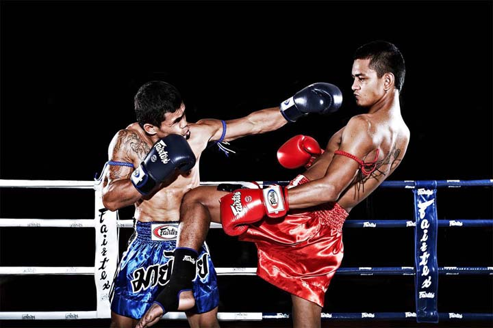
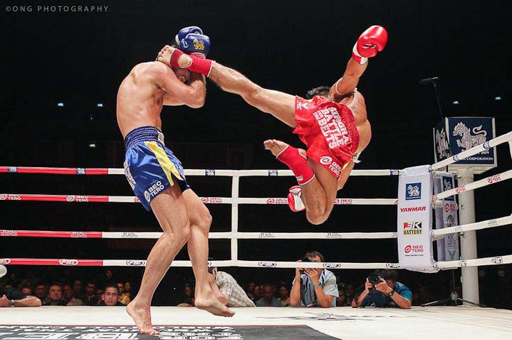
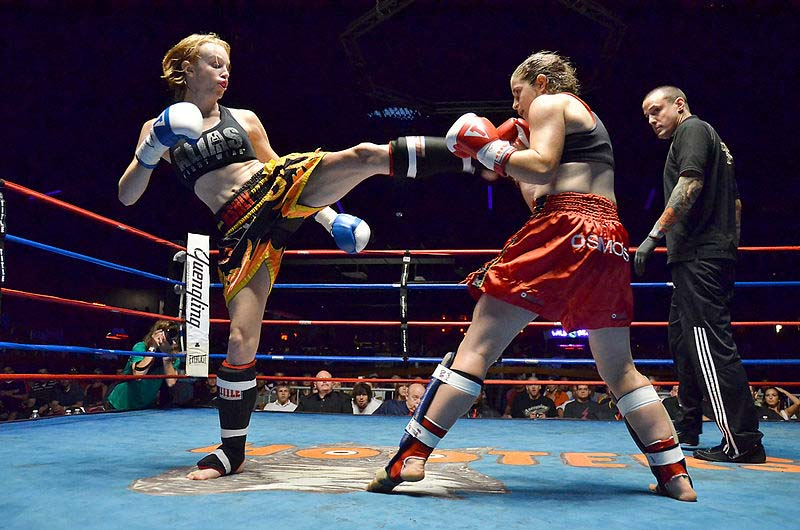
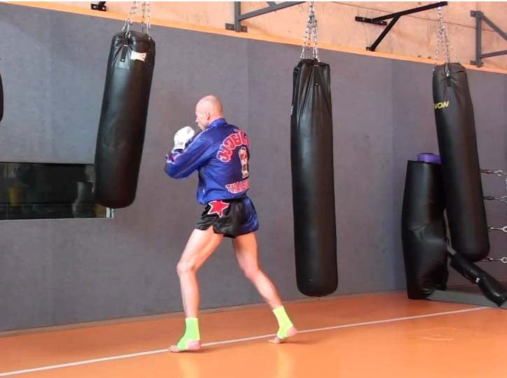

LEARN MUAYTHAISKIP TO MENU?
[ INTRODUCTION ]
Are you planning to learn Muay Thai & its Combat skills?
Do want to upgrade your Muay Thai skills or techniques?
Or just need some professional instructions to teach your colleagues, students or family?
Then this is the best App for you to learn Muay Thai easily.
 You just sit back relax and follow the award winning instructions/tutorials in this App and Remember to always read it all the time over & over again.
Click on the START TRAINING button below to learn all the techniques & Skills needed in Muay Thai.
HISTORY
Muay Thai , (Thai: มวยไทย, rtgs: Muai Thai, pronounced [mūa̯j tʰāj] ) or Thai boxing is a combat sport of Thailand that uses stand-up striking along with various clinching techniques. This physical and mental discipline which includes combat on shins is known as "the art of eight limbs" because it is characterized by the combined use of fists, elbows, knees, shins, being associated with a good physical preparation that makes a full-contact fighter very efficient. Muay Thai became widespread internationally in the twentieth century, when practitioners defeated notable practitioners of other martial arts. The professional league is governed by The Professional Boxing Association of Thailand (P.A.T) sanctioned by The Sport Authority of Thailand (S.A.T.), and World Muaythai Federation (WMF) overseas.
History of Muay Thai can also be traced to the middle of the 16th century. During the battles between the Burmese of the Konbaung Dynasty and Siam, the famous fighter Nai Khanomtom was captured in the year 1767. The Burmese knew of his expertise in hand-to-hand combat and gave him an opportunity to fight for his freedom. Soon after winning the match, he was freed by his captors and allowed to return to Siam. He was acknowledged as a hero, and his fighting style became known as Siamese-Style boxing, later to be known as Muay Thai. This fighting style was soon to be recognized as a national sport.
Muay boran , and therefore Muay Thai, was originally called by more generic names such as Toi muay or simply muay. As well as being a practical fighting technique for use in actual warfare, muay became a sport in which the opponents fought in front of spectators who went to watch for entertainment. These muay contests gradually became an integral part of local festivals and celebrations, especially those held at temples. Eventually, the previously bare-fisted fighters started wearing lengths of hemp rope around their hands and forearms. This type of match was called muay khat chueak (มวยคาดเชือก). Kickboxing was also a component of military training and gained prominence during the reign of King Naresuan in 1560 CE.
Muay Thai is referred to as the "Art of Eight Limbs" or the "Science of Eight Limbs", because it makes use of punches, kicks, elbows and knee strikes, thus using eight "points of contact", as opposed to "two points" (fists) in boxing and "four points" (hands and feet) used in other more regulated combat sports, such as kickboxing and savate. A practitioner of muay Thai is known as a nak muay. Western practitioners are sometimes called Nak Muay Farang, meaning "foreign boxer.
19TH CENTURY
The ascension of King Chulalongkorn (Rama V) to the throne in 1868 ushered in a golden age not only for muay but for the whole country of Thailand. Muay progressed greatly during the reign of Rama V as a direct result of the king's personal interest in the sport. The country was at peace and muay functioned as a means of physical exercise, self-defense, attacking, recreation, and personal advancement.
More History >>
MODERNIZATION
1909-1910: King Chulalongkorn formalizes Muay (Boran) by awarding (in 1910) 3 muen to victors at the funeral fights for his son (in 1909). The region style: Lopburi, Korat, and Chaiya.
1913: British boxing introduced into the curriculum of the Suan Kulap College. The 1st descriptive use of the term “Muay Thai”
1919: British boxing and Muay taught as one sport in the curriculum of the Suan Kulap College. Judo also offered.
1923: Suan Sanuk Stadium. First international style 3-rope ring with red and blue padded corners, near Lumpinee Park. Muay and British Boxing.
King Rama VII (r. 1925–35) pushed for codified rules for muay, and they were put into place. Thailand's first boxing ring was built in 1921 at Suan Kularp. Referees were introduced and rounds were now timed by kick. Fighters at the Lumpinee Kickboxing Stadium began wearing modern gloves, as well as hard groin protectors, during training and in boxing matches against foreigners. Traditional rope-binding (Kaad Chuek) made the hands a hardened, dangerous striking tool.
The use of knots in the rope over the knuckles made the strikes more abrasive and damaging for the opponent while protecting the hands of the fighter. This rope-binding was still used in fights between Thais but after the occurrence of a death in the ring, it was decided that fighters should wear gloves and cotton coverlets over the feet and ankles. It was also around this time that the term muay Thai became commonly used while the older form of the style came to be known as muay boran, which is now performed primarily as an exhibition art form.
In 1993, the International Federation of Muaythai Amateur, or IFMA was inaugurated. It became the governing body of amateur Muay Thai consisting of 128 member countries worldwide and is recognized by Olympic Council of Asia.
In 1995 , World Muaythai Council, the oldest and largest professional sanctioning organizations of Muay Thai was set up by the Royal Thai Government and sanctioned by the Sports Authority of Thailand
In 2006 , Muay Thai was included in SportAccord with IFMA. One of the requirements of SportAccord was that no sport can have a name of a country in its name, as a result, an amendment was made in the IFMA constitution to change the name of the sport from 'Muay Thai’ to ‘Muaythai’ – written in one word in accordance with Olympic requirements.
In 2014 Muay Thai was included in the International World Games Association (IWGA) and will be represented in the official programme of The World Games 2017 in Wrocław, Poland.
In January 2015 , Muay Thai was granted the Patronage of the International University Sports Federation (FISU) and on March the 16th to the 23rd, 2015 the first University World Muaythai Cup will be held in Bangkok.
Today , there are thousands of gyms spread out across the globe. The clothing which competitors typically wear is bright and flamboyant. Recently such designs have become quite popular globally and companies such as Infightstyle Inc., from Canada, have contributed to the popularization of the style throughout the world. It is expected that this style will become more and more mainstream as a cult style much like surfwear did in the late 90s.
Folklore/fable Nai Khanomtom
According to Thai folklore at the time of the fall of the ancient Siamese capital of Ayutthaya Kingdom in 1767, the invading Burmese troops rounded up thousands of Siamese and took them to Burma as prisoners. Among them were a large number of Thai boxers, who were taken to the city of Ava.
In 1774, in the Burmese city of Rangoon, the Burmese King Hsinbyushin (known in Thai as "King Mangra") decided to organize a seven-day, seven-night religious festival in honor of Buddha's relics. The festivities included many forms of entertainment, such as the costume plays called likay, comedies and farces, and sword-fighting matches. At one point, King Hsinbyushin wanted to see how Muay Boran would compare to the Lethwei (Burmese Boxing). Nai Khanomtom was selected to fight against the Burmese champion.
The boxing ring was set up in front of the throne and Nai Khanomtom did a traditional Wai Kru pre-fight dance, to pay his respects to his teachers and ancestors, as well as the spectators, dancing around his opponent. This amazed and perplexed the Burmese people, who thought it was black magic. When the fight began, Nai Khanomtom charged out, using punches, kicks, elbows, and knees to pummel his opponent until he collapsed.
However the Burmese referee said the Burmese champion was too distracted by the dance, and declared the knockout invalid. The King then asked if Nai Khanomtom would fight nine other Burmese champions to prove himself. He agreed and fought them all, one after the other with no rest periods in between. His last opponent was a great kickboxing teacher from Rakhine. Nai Khanomtom mangled him by his kicks and no one else dared to challenge him.
King Mangra was so impressed that he allegedly remarked, "Every part of the Siamese is blessed with venom. Even with his bare hands, he can fell nine or ten opponents. But his Lord was incompetent and lost the country to the enemy. If he had been any good, there was no way the City of Ayutthaya would ever have fallen."
King Mangra granted Nai Khanomtom freedom along with either riches or two beautiful Burmese wives. Nai Khanomtom chose the wives as he said that money was easier to find. He then departed with his wives for Siam. Other variations of this story had him also winning the release of his fellow Thai prisoners. His feat is celebrated every March 17 as Boxer's Day or National Muay Boran Day in his honor and that of muay boran's.
Today, some have wrongly attributed the legend of Nai Khanomtom to King Naresuan, who spent his youth as a royal hostage in Burma while Ayutthaya was a Burmese vassal. However, Nai Khanomtom and King Naresuan lived almost two centuries apart.
TECHNIQUES

Muay Thai match in Bangkok, Thailand
Formal muay Thai techniques are divided into two groups: mae mai or major techniques and luk mai or minor techniques. Muay Thai is often a fighting art of attrition, where opponents exchange blows with one another. This is certainly the case with traditional stylists in Thailand, but is a less popular form of fighting in the contemporary world fighting circuit where the Thai style of exchanging blow for blow is no longer favorable. Almost all techniques in Muay Thai use the entire body movement, rotating the hip with each kick, punch, elbow and block.
Punching (Chok)
The punch techniques in muay Thai were originally quite limited being crosses and a long (or lazy) circular strike made with a straight (but not locked) arm and landing with the heel of the palm. Cross-fertilization with Western boxing and western martial arts mean the full range of western boxing punches are now used: lead jab, straight/cross, hook, uppercut, shovel and corkscrew punches and overhands as well as hammer fists and back fists.
As a tactic, body punching is used less in muay Thai than most other striking combat sports to avoid exposing the attacker's head to counter strikes from knees or elbows. To utilize the range of targeting points, in keeping with the center line theory, the fighter can use either the Western or Thai stance which allows for either long range or short range attacks to be undertaken effectively without compromising guard.
Elbow (Sok)
The elbow can be used in several ways as a striking weapon: horizontal, diagonal-upwards, diagonal-downwards, uppercut, downward, backward-spinning and flying. From the side, it can be used as either a finishing move or as a way to cut the opponent's eyebrow so that blood might block his vision. The diagonal elbows are faster than the other forms but are less powerful. The elbow strike is considered the most dangerous form of attack in the sport.
There is a distinct difference between a single elbow and a follow-up elbow. The single elbow is an move independent from any other, whereas a follow-up elbow is the second strike from the same arm, being a hook or straight punch first with an elbow follow-up. Such elbows, and most other elbow strikes, are used when the distance between fighters becomes too small and there is too little space to throw a hook at the opponent's head.
Elbows can be used to great effect as blocks or defenses against, for example, spring knees, side body knees, body kicks or punches. When well connected, an elbow strike can cause serious damage to the opponent, including cuts or even a knockout.
Kicking (Te)

Muay Thai boxer delivering a kick
The two most common kicks in muay Thai are known as the thip (literally "foot jab") and the te chiang (kicking upwards in the shape of a triangle cutting under the arm and ribs) or roundhouse kick. The Thai roundhouse kick uses a rotational movement of the entire body and has been widely adopted by practitioners of other combat sports.
It is done from a circular stance with the back leg just a little ways back (roughly shoulder width apart) in comparison to instinctive upper body fighting (boxing) where the legs must create a wider base. The roundhouse kick draws its power almost entirely from the rotational movement of the hips, counter-rotation of the shoulders and arms are also often used to add torque to the lower body and increase the power of the kick as well.
If a roundhouse kick is attempted by the opponent, the Thai boxer will normally check the kick, that is he will block the kick with the outside of his lower leg. Thai boxers are trained to always connect with the shin. The foot contains many fine bones and is much weaker. A fighter may end up hurting himself if he tries to strike with his foot or instep. Shins are trained by repeatedly striking firm objects, such as pads or heavy bags.
Knee (Ti Khao)
Khao dot [kʰàw dòːt] (Jumping knee strike) – the boxer jumps up on one leg and strikes with that leg's knee.
Khao loi (Flying knee strike) – the boxer takes a step(s), jumps forward and off one leg and strikes with that leg's knee.
Khao thon [kʰàw tʰoːn] (Straight knee strike) – the boxer simply thrusts it forward but not upwards, unless he is holding an opponent's head down in a clinch and intend to knee upwards into the face. According to one written source, this technique is somewhat more recent than khao dot or khao loi.
Supposedly, when the Thai boxers fought with rope-bound hands rather than the modern boxing gloves, this particular technique was subject to potentially vicious cutting, slicing and sawing by an alert opponent who would block it or deflect it with the sharp "rope-glove" edges which are sometimes dipped in water to make the rope much stronger. This explanation also holds true for some of the following knee strikes below as well.
Foot-thrust (Teep)
The foot-thrust or literally "foot jab" is one of the techniques in muay Thai. It is mainly used as a defensive technique to control distance or block attacks. Foot-thrusts should be thrown quickly but with enough force to knock an opponent off balance.
CLINCH AND NECK WRESTLING (CHAP KHO)
In Western boxing the two fighters are separated when they clinch; in muay Thai, however, they are not. It is often in the clinch where knee and elbow techniques are used. To strike and bind the opponent for both offensive and defensive purposes, small amounts of stand-up grappling are used in the clinch. The front clinch should be performed with the palm of one hand on the back of the other. There are three reasons why the fingers must not be intertwined. 1) In the ring fighters are wearing boxing gloves and cannot intertwine their fingers. 2)
The Thai front clinch involves pressing the head of the opponent downwards, which is easier if the hands are locked behind the back of the head instead of behind the neck. Furthermore, the arms should be putting as much pressure on the neck as possible. 3) A fighter may incur an injury to one or more fingers if they are intertwined, and it becomes more difficult to release the grip in order to quickly elbow the opponent's head.
A correct clinch also involves the fighter's forearms pressing against the opponent's collar bone while the hands are around the opponent's head rather than the opponent's neck. The general way to get out of a clinch is to push the opponent's head backward or elbow them, as the clinch requires both participants to be very close to one another. Additionally, the non-dominant clincher can try to "swim" their arm underneath and inside the opponent's clinch, establishing the previously non-dominant clincher as the dominant clincher.
Muay Thai has several other variants of the clinch or chap kho [tɕàp kʰɔː], including:
Arm clinch: One or both hands controls the inside of the defender's arm(s) and where the second hand if free is in the front clinch position. This clinch is used to briefly control the opponent before applying a knee strike or throw
Side clinch: One arm passes around the front of the defender with the attacker's shoulder pressed into the defender's arm pit and the other arm passing round the back which allows the attacker to apply knee strikes to the defender's back or to throw the defender readily.
Low clinch: Both controlling arms pass under the defender's arms, which is generally used by the shorter of two opponents.
Swan-neck: One hand around the rear of the neck is used to briefly clinch an opponent before a strike.
DEFENSE AGAINST ATTACKS
Defenses in muay Thai are categorized in six groups:
Blocking – defender's hard blocks to stop a strike in its path so preventing it reaching its target (e.g. the shin block described in more detail below)
Redirection – defender's soft parries to change the direction of a strike (e.g. a downwards tap to a jab) so that it misses the target
Avoidance – moving a body part out of the way or range of a strike so the defender remains in range for a counter-strike. For example, the defender moves their front leg backward to avoid the attacker's low kick, then immediately counters with a roundhouse kick. Or the defender might lay their head back from the attacker's high roundhouse kick then counter-attack with a side kick.
Evasion – moving the body out of the way or range of a strike so the defender has to move close again to counter-attack, e.g. defender jumping laterally or back from attacker's kicks
Disruption – Pre-empting an attack e.g. with defender using disruptive techniques like jab, foot-thrust or low roundhouse kick, generally called a "leg kick"(to the outside or inside of the attacker's front leg, just above the knee) as the attacker attempts to close distance
Anticipation – Defender catching a strike (e.g. catching a roundhouse kick to the body) or countering it before it lands (e.g. defender's low kick to the supporting leg below as the attacker initiates a high roundhouse kick).
PUNCHES AND KICKS
Defenses in muay Thai are categorized in six groups:
Defensively , the concept of "wall of defense" is used, in which shoulders, arms and legs are used to hinder the attacker from successfully executing techniques. Blocking is a critical element in muay Thai and compounds the level of conditioning a successful practitioner must possess. Low and mid body roundhouse kicks are normally blocked with the upper portion of a raised shin (this block is known as a 'check').
High body strikes are blocked ideally with the forearms and shoulder together, or if enough time is allowed for a parry, the glove (elusively), elbow, or shin will be used. Midsection roundhouse kicks can also be caught/trapped, allowing for a sweep or counter-attack to the remaining leg of the opponent. Punches are blocked with an ordinary boxing guard and techniques similar, if not identical, to basic boxing technique.
High A common means of blocking a punch is using the hand on the same side as the oncoming punch. For example, if an orthodox fighter throws a jab (being the left hand), the defender will make a slight tap to redirect the punch's angle with the right hand. The deflection is always as small and precise as possible to avoid unnecessary energy expenditure and return the hand to the guard as quickly as possible.
Hooks are often blocked with a motion sometimes described as "combing the hair", that is, raising the elbow forward and effectively shielding the head with the forearm, flexed biceps and shoulder. More advanced muay Thai blocks are usually in the form of counter-strikes, using the opponents weight (as they strike) to amplify the damage that the countering opponent can deliver. This requires impeccable timing and thus can generally only be learned by many repetitions.
CONDITIONING

A fighter punching a heavy bag at a training camp in Thailand
Like most competitive full contact fighting sports, muay Thai has a heavy focus on body conditioning. Muay Thai is specifically designed to promote the level of fitness and toughness required for ring competition. Training regimens include many staples of combat sport conditioning such as running, shadowboxing, rope jumping, body weight resistance exercises, medicine ball exercises, abdominal exercises, and in some cases weight training.
Thai boxers rely heavily on kicks utilizing the shin bone. As such, practitioners of muay Thai will repeatedly hit a dense heavy bag with their shins, conditioning it, hardening the bone through a process called cortical remodeling. Striking a sand filled bag will also have the same effect.
A fighter before a round
Training that is specific to a Thai fighter includes training with coaches on Thai Pads, focus mitts, heavy bag, and sparring. The daily training includes many rounds (3–5 minute periods broken up by a short rest, often 1–2 minutes) of these various methods of practice.
Thai Pad training is a cornerstone of muay Thai conditioning which involves practicing punches, kicks, knees, and elbow strikes with a trainer wearing thick pads which cover the forearms and hands. These special pads (often referred to as Thai pads) are used to absorb the impact of the fighter’s strikes and allow the fighter to react to the attacks of the pad holder in a live situation.
The trainer will often also wear a belly pad around the abdominal area so that the fighter can attack with straight kicks or knees to the body at any time during the round.
Focus mitts are specific to training a fighter’s hand speed, punch combinations, timing, punching power, defense, and counter-punching and may also be used to practice elbow strikes. Heavy bag training is a conditioning and power exercise that reinforces the techniques practiced on the pads.
Sparring is a means to test technique, skills, range, strategy, and timing against a partner. Sparring is often a light to medium contact exercise because competitive fighters on a full schedule are not advised to risk injury by sparring hard. Specific tactics and strategies can be trained with sparring including in close fighting, clinching and kneeing only, cutting off the ring, or using reach and distance to keep an aggressive fighter away.
Due to the rigorous training regimen (some Thai boxers fight almost every other week) professional boxers in Thailand have relatively short careers in the ring. Many retire from competition to begin instructing the next generation of Thai fighters. Most professional Thai boxers come from the lower economic backgrounds, and the fight money (after the other parties get their cut) is sought as means of support for the fighters and their families. Very few higher economic strata Thais join the professional muay Thai ranks; they usually either do not practice the sport or practice it only as amateur muay Thai boxers.
THE MONGKHON AND PRA JIAD
The Mongkhon, or Mongkol (headband) and Pra Jiad (armbands) are often worn into the ring before the match begins. They originate back in times when Thailand was in a constant state of war, where young men would tear off pieces of a loved one's clothing (often their mother's sarong) and wear it to battle for good luck as well as to ward off harmful spirits.
In modern times the Mongkol (lit. meaning holy spirit, luck, and protection) is worn as a tribute to the gym that the Muay Thai fighter is fighting out of. The Mongkol is traditionally presented by a trainer to the fighter once he feels that the fighter is ready to represent the gym's name in the ring. Often after the fighter has finished the Wai Kru, the trainer will take the Mongkol off of his head and place it on their corner of the ring for luck.
Whether the fighter is a Buddhist or not, it is common for them to bring the Mongkol to a Buddhist monk who blesses it with good luck prior to stepping into the ring.
CHILDREN
In 2016, 9,998 children under the age of 15 were registered with Board of Boxing under the Sport Authority of Thailand, according to Child Safety Promotion and Injury Prevention Research Centre (CSIP). 420 "young boxers registered with the" board annually, between 2007 and 2015.
Adisak Plitapolkarnpim , director of CSIP, was indirectly quoted (in 2016) as having said that Muay Thai practitioners "younger than 15 years old are being urged to avoid 'head contact' to reduce the risk of brain injuries, while children aged under nine should be banned from the combat fight";
furthermore the Boxing Act's minimum age to compete professionally", was largely being flouted; furthermore, indirectly quoted: "Boxers aged between 13 and 15" should still be permitted to compete, but "with light contact to the head and face";
Directly quoted, he said that "Spectators and a change in the boxing rules can play a vital role in preventing child boxers from suffering brain injuries, abnormality in the brain structure, Parkinson's disease and early-onset Alzheimer's later in life";
furthermore "Children aged between nine and 15 can take part in [Thai-] boxing, but direct head contact must not be allowed"; furthermore, referring to "Findings [of 2014] on the Worst Forms of Child Labour" as published by the United States Department of Labour's Bureau of International Labour Affairs, he said that "We know Muay Thai paid fighters have been exploited in the past like child labourers and the matter still remains a serious concern".
START TRAINING
GO HOME

 +233-0547999998
+233-0547999998  More Apps
More Apps